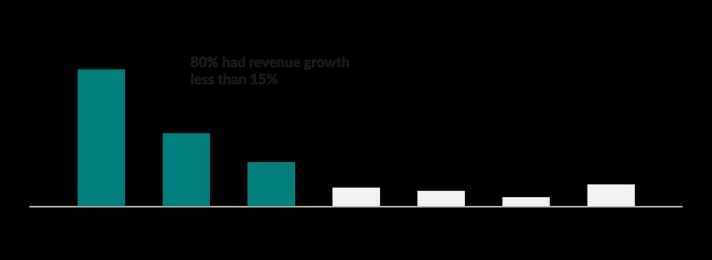
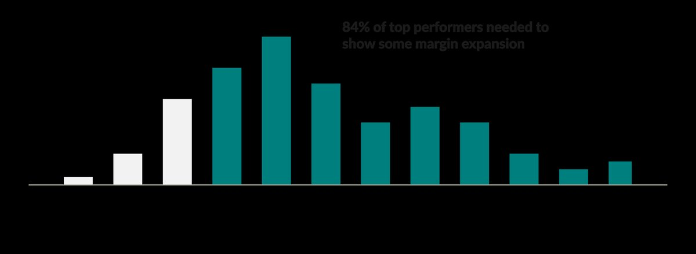
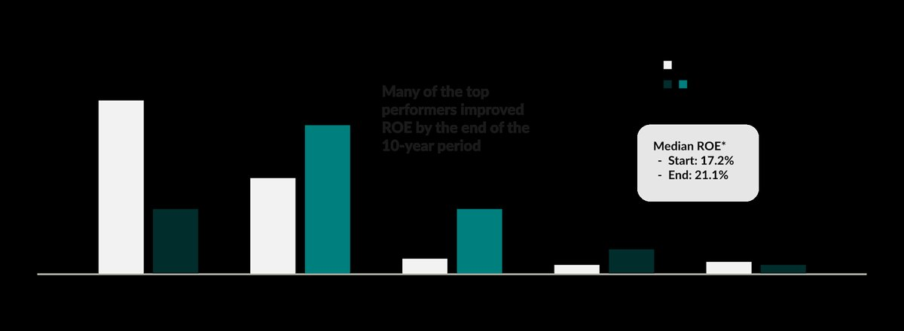
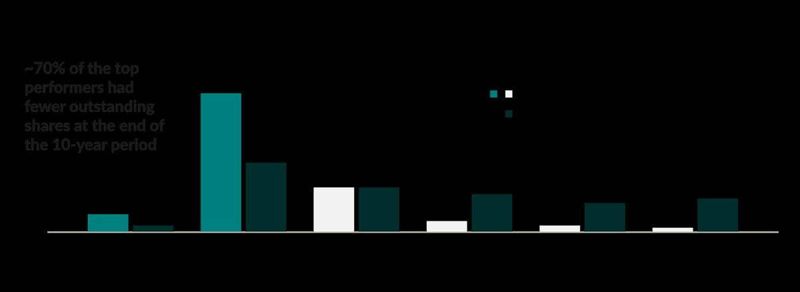
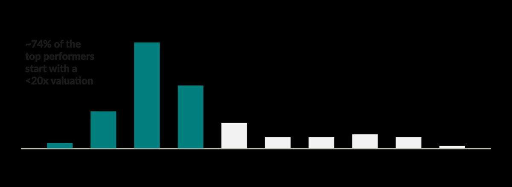
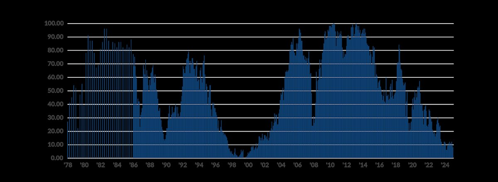
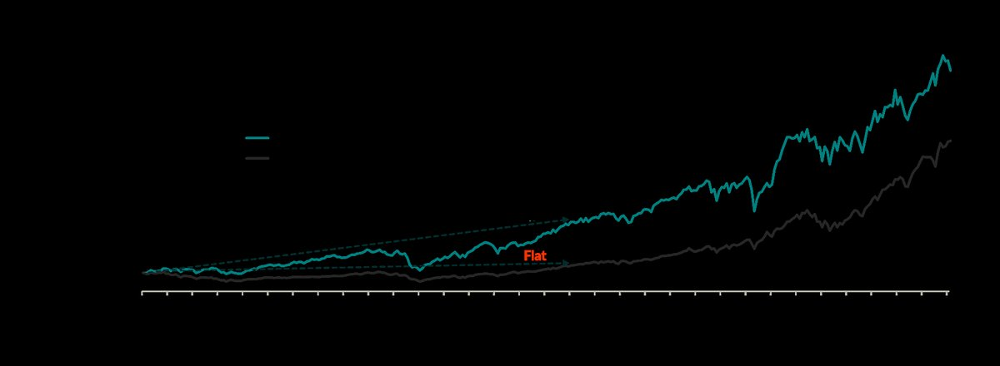
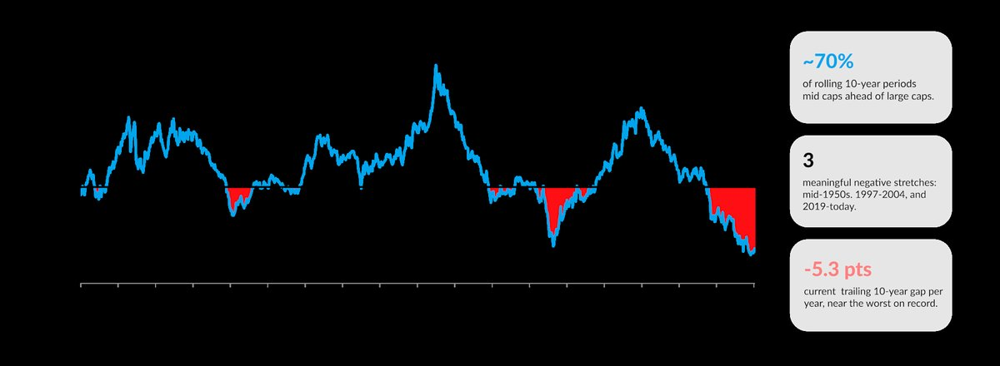
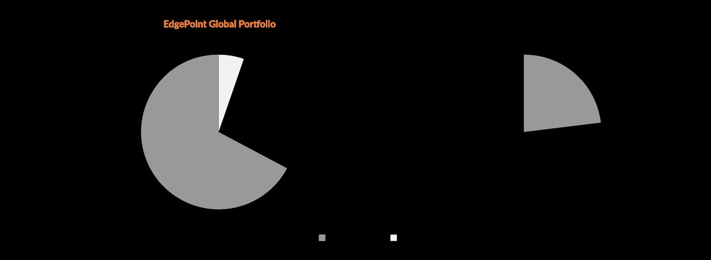

EdgePoint 百年数据 中盘股 估值 耐心 回购 长期主义
一个组合不需要每笔投资都成功：少数几家企业 + 足够长的时间，就能撑起几乎全部回报。但它们必须买在合理的价格上——所以 EdgePoint 如今把 67% 仓位放在中盘股、只留 28% 给大盘股，并且坚持一条原则：买增长，但不为增长付钱。
"在伯克希尔 58 年的管理生涯中，我的多数资本配置决策也只能算不好不坏……我们之所以取得了差强人意的结果，靠的是大约十二个真正好的决策……时间拉长来看，只需要少数几个赢家就能创造奇迹。" —— 沃伦·巴菲特，伯克希尔 2022 年致股东信"In 58 years of Berkshire management, most of my capital-allocation decisions have been no better than so-so… Our satisfactory results have been the product of about a dozen truly good decisions... Over time, it takes just a few winners to work wonders." — Warren Buffett, Berkshire Hathaway 2022 Letter to Shareholders
我记得第一次读到这段话时的惊讶：历史上最成功的投资人之一，说自己多数决策只是"不好不坏"。在近六十年里，有评论者估算巴菲特做过 300 到 400 个有意义的决定——涵盖公开市场买入、整体收购企业、以及关键人才引进。伯克希尔非凡的成功，实际上可以归结为大约十二个真正好的决定：所有决策中有 3% 到 4% 真正改变了结果。
I remember being surprised when I first read this. One of history's most successful investors was saying most of his decisions had only been "so-so". Over nearly six decades, some commentators estimate Buffett made between 300 to 400 meaningful decisions, spanning investments in publicly traded stocks, acquiring entire businesses and key hires. Berkshire's extraordinary success effectively came down to about a dozen truly good decisions – 3% to 4% of all decisions truly moved the needle.一个组合不需要每笔投资表现一致地好。少数几家足够出色的企业，只要持有得够久，贡献就能远超它们当初在组合里的权重。我们作为投资人的功课是：在合理的价格上找到这些企业，屏蔽短期市场噪音，并给它们的成长留出兑现的时间。
A portfolio doesn't need every investment to work equally well. A few exceptional businesses, held long enough, can contribute far more than their original weight might suggest. Our challenge as investors is to find those businesses at sensible prices, tune out short-term market noise and give their growth time to matter.亚利桑那州立大学教授 Hendrik Bessembinder 的研究显示，"极少数股票创造了大部分财富"这件事，并不只是"奥马哈先知"一个人的故事。最新的版本是一项跨越百年的研究：覆盖 1926 年 1 月至 2025 年 12 月间在美国市场上市的 29,754 只普通股（来自 29,081 家公司）。这 100 年里，市场年化复合回报 10.1%；然而超过一半的单只股票在其生命周期内，买入持有的总回报是负的。在该研究的早期版本中，四分之一的股票（23%）亏损超过 90%。
Research by Arizona State University professor Hendrik Bessembinder shows that the idea that a small minority of stocks creates the majority of wealth isn't limited to the Oracle of Omaha. The most recent update is a century-long study that looks at 29,754 U.S. common stocks issued by 29,081 companies from January 1926 to December 2025. Over 100 years, the market compounded at 10.1% annually, yet more than half of individual stocks delivered negative buy-and-hold returns over their lifetimes. In an earlier version of the study, one in four stocks (23%) lost over 90% of their value.Bessembinder 进一步，把这些股票的总财富创造与等额投资美国国债（通常被视为无风险回报）做了对比，计算中包含了全部股息、增发与回购。结果是：在 29,081 家公司中，59.1% 摧毁了财富，另有 37.2% 抵消了这些损失，剩下的 3.7% 贡献了超出国债的全部净财富。
Dr. Bessembinder went further by comparing the stocks' aggregate wealth creation against an equivalent investment in U.S. Treasury bills, often considered a risk-free return. The analysis included all dividends, share issuances and repurchases. Of the 29,081 companies, 59.1% detracted from wealth creation. Another 37.2% offset those losses. The remaining 3.7% accounted for all net wealth created above T-bills.换句话说，研究中排在后 96.3% 的所有公司，合起来创造的净财富不超过国债基准。EdgePoint 投资团队不用股价波动率来衡量风险，而是看资本永久性损失的可能性；作为承担这种风险的交换，他们要求得到令人满意的回报。这项研究说明：对多数股票而言，投资者承担的风险大于可能获得的收益。
Put another way, the bottom 96.3% of all companies in the study collectively created no net wealth above the T-bill benchmark. The EdgePoint Investment Team doesn't measure risk using price volatility, but rather likelihood of permanent loss of capital. In exchange for that possibility, we want to be compensated with a pleasing return. The study showed that the majority of stocks caused investors to risk more than they were likely to gain.Bessembinder 在全球市场做的类似分析，结论相同：1990 到 2020 年间，只有 2.4% 的发行人是全球股市相对美国国债的财富创造来源；57.7% 相对国债毁灭了财富，39.9% 的发行人抵消了这些损失。
Similar analyses conducted by Dr. Bessembinder showed that the story was the same in global markets. Between 1990 and 2020, 2.4% of issuers were responsible for global stock market wealth creation relative to U.S. T-Bills. A staggering 57.7% destroyed wealth relative to T-bills, while 39.9% of issuers offset those losses.正如我一位 EdgePoint 同事常说的："如果靠股市赚钱是件容易的事，这世界早就富起来了——而它并不富，是有原因的。"这些研究正好解释了为什么市场回报极不均匀：多数投资令人失望，少数则做出惊人的事，把投资者的资本放大 10 倍、100 倍甚至 1,000 倍。
As one of my EdgePoint colleagues is fond of saying, "If making money in the stock market were easy, the world would be rich, and it isn't rich for a reason." These studies help explain why market returns are extraordinarily uneven. Many investments disappoint, while a small number do wonderous things, multiplying investors' capital 10, 100 or even 1,000 times.想在市场上拿到"彩票级"回报，并不需要承担过度的投资风险。但我们确实需要理解：是什么让一家企业能够持续提升自身价值。
You don't have to take excessive investment risks to get lottery-type returns in the market. But we do need to understand what allows a business to keep increasing its value over time.找出未来能跑赢的股票并没有万能公式。但 Raymond James 的一项研究统计了 1999 至 2023 年间、十年期回报处于前十分位的 S&P 500 公司，发现一个有意思的事实：这些赢家遍布所有行业与所有地区。下面是其中几条更值得注意的共性。
While there isn't a magic formula to find stocks that will outperform, a recent Raymond James study looked at traits among the S&P 500 Index companies with top-decile returns over 10-year periods from 1999 to 2023. Interestingly, it showed that the top outperformers could be found across all industries and geographies. Below are some of the more interesting commonalities among the best-performing stocks.大多数赢家起初并不是高增长公司：约 80% 的公司第一年销售增速低于 15%，只有 7% 一开始就超过 30%。把增长维持住，比一个异常快的开局更重要——这些赢家的销售增速中位数，在随后十年里是年化 8%。
Most weren't hypergrowth companies at the outset. About 80% had first-year sales growth below 15%, while only 7% began above 30%. Sustaining that growth mattered more than an unusually fast start. Outperformers median annualized sales growth was 8% over the decade.
头部公司通常在起点就已经盈利——只有 5% 在期初或期末出现亏损。而且它们大多能持续提升盈利能力：约 84% 扩张了利润率，扩张幅度中位数为 +6.1%。强现金创造是常见特征——约 60% 的公司自由现金流高于其账面会计利润。
Top performers were usually already profitable at the start – only 5% had negative earnings either at the start or the end. Most were also able to increase their earnings. Approximately 84% expanded their profit margins, with a median increase of 6.1%. Strong cash generation was a common feature – roughly 60% had free cash flow higher than their reported accounting earnings.
净资产收益率（ROE）走出了类似的改善路径。这些头部公司的管理层，通常是变成了更好的资本配置者。期初时，56% 的公司 ROE 为正但低于 20%；到期末，近 70% 的公司 ROE 高于 20%。ROE 中位数从 17% 提升到 27%。
Returns on equity (ROE) followed a similar pattern of improvement. The top-performing companies generally had managers who became better capital allocators. At the start, 56% had positive ROE below 20%. By the end, almost 70% had ROE above 20%. Median ROE rose from 17% to 27%.
约 70% 的公司在十年里减少了自己的股本。增长没有被增发股票所抵消——这意味着赢家的每股口径增长更快。
Roughly 70% reduced their share count over the decade. Growth wasn't offset by issuing more shares, meaning that the winners grew faster on a per-share basis.
估值同样重要：74% 的头部公司在起点市盈率低于 20 倍。但表现最好的并不是最便宜的那批——只有 15% 起点低于 10 倍 PE，而 59% 起点落在 10 到 20 倍之间。
Valuation mattered too, with 74% of top performers beginning below 20x earnings (P/E). But it wasn't necessarily the cheapest companies that performed the best – only 15% began below 10x earnings, while 59% started between 10x and 20x earnings.
数学其实很简单：收入 × 净利率 = 利润，利润 ÷ 股本 = 每股收益。所以当利润率改善、股本收缩时，一个平淡的收入增速可以变成极快的每股增长。
The math is straightforward – revenue multiplied by net profit margin gives earnings, dividing by share count gives earnings per share. Modest revenue growth can therefore become much faster per-share growth when margins improve and the share count falls.这些就是过去赢家的特征。有些看起来平平的公司会随时间变好，有些始终平庸，剩下的则不断恶化。EdgePoint 投资团队要做的是识别出正在影响一家企业的"变化动因"：我们看到基本面的改善，但这种改善尚未反映在股价里。
These are the characteristics of past winners. Some ordinary-looking businesses improve over time, others stay ordinary and the rest deteriorate. The EdgePoint Investment Team looks to identify agents of change that are impacting a business where we see the fundamentals of a business improving but that change hasn't been reflected in its share price yet.估值是叠在企业之上的那层滤镜，反映市场心理——投资者对某家公司执行并交付增长的能力，有多乐观或多悲观。同一家企业，在 10 倍 PE 时是好投资，在 40 倍 PE 时就是坏投资。
Valuation is the overlay that reflects market psychology – how enthusiastic or pessimistic are investors in a particular company's ability to execute and deliver growth to shareholders. The same business can be a wonderful investment at 10x earnings and a terrible one at 40x earnings.大多数估值指标都挂在价格上，而价格可能非常不稳定。EdgePoint 上一篇评论曾指出：MSCI World 指数前 10 大公司在过去十年里，日历年最高价与最低价之间的平均价差达到 66%。这些是全球最大的公司，盈利能力稳定，被无数投资人广泛持有并研究——但其股价波动率是底层企业的好几倍。
Most valuation metrics are tied to price, something that can be very volatile. A previous commentary showed that there was 66% average spread between the calendar-year high and low stock prices over the previous decade for the 10 largest companies in the MSCI World Index. These are the biggest companies in the world, with stable earnings power, widely owned and analyzed by thousands of investment professionals. The volatility in share price is multiples higher than that of the underlying business.波动加大的一个原因，是投资者的时间视野变短了。想想你认识的某个自己做生意、而且做得不错的人：他是因为每七个月就买进卖出一次企业而成功，还是因为长期投入同一门生意、把财富慢慢做大？
Volatility has increased in part due to shorter investor time horizons. Think about someone you know who owns their own business and is financially successful. Did they achieve that success by repeatedly buying and selling businesses every seven months or did they stay involved with the same business for years to grow their wealth?市场换手率数据说明了耐心有多难。据一份分析师报告，美股平均持有期从 1975 年的 8.7 年，降到 2025 年略高于七个月——持有时间缩短了 93%。这对以长期视角投资的人构成优势：你在看未来几年，别人在看未来几个月。
Market turnover statistics indicate how difficult patience can be. According to an analyst report, the average holding period for U.S. stocks went from 8.7 years in 1975 to just over seven months in 2025 – a 93% reduction in time held. This creates advantage for the longer-term-focused investor because they're looking out years while everyone else is looking out months.把耐心与"理解股票背后的企业"结合起来，是我们所认为的长期财富积累的最好方式之一。EdgePoint 投资团队的成员手里，都有一批观察了几年、甚至几十年的公司名单，一旦市场短期价格波动给出机会，就能迅速行动。
Patience combined with an understanding of the businesses behind those stocks is one of the best ways we believe to grow wealth over time. EdgePoint Investment Team members have lists of companies we have been watching for years, if not decades, that allow us to act quickly if the short-term price volatility in the market presents an opportunity.如今，我们认为中盘股（mid-cap）的估值更有吸引力。规模很重要：体量较小的企业通常比已经占据主导地位的大企业有更多扩张空间。
Today, we believe that valuations are more attractive in the mid-cap space. Size matters; smaller businesses generally have more room to expand than companies that are larger and already dominant.我们可以用 S&P 100 指数（大盘股）与 S&P MidCap 400 指数（中盘股）的成分股中位市值，说明一个"典型"公司要翻倍有多难：
We can use the median market capitalizations of the S&P 100 Index (large caps) and the S&P MidCap 400 Index (mid caps) to illustrate what it would take for a typical company of each size to double:| 指数 Index | 中位市值 Median market cap (US$B) |
|---|---|
| S&P 100 Index（大盘股） | $217.2B |
| S&P MidCap 400 Index（中盘股） | $8.0B |
资料来源：FactSet Research Inc.，截至 2026-09-30。S&P 100 为美国市值最大的 100 家公司；S&P MidCap 400 为市值居中的 400 家美国公司。指数本身不可投资。
换个参照系：全球市值超过 US$2,172 亿（217.2B）——也就是最大那批公司中位市值——的公司，全世界不到 100 家。要让大盘股指数的中位公司翻倍，它得长出相当于 9 月底加拿大皇家银行（RBC）市值（US$2,734 亿）的 80%。
To put that in perspective, there are fewer than 100 companies in the world with a market cap over US$217.2 billion, the median size of the largest companies. For the median company in the large-cap index to double, it would have to grow by 80% of RBC's market capitalization (US$273.4 billion) at the end of September.下面这张图，把 Russell Midcap 指数相对 Russell Top 200 指数的相对估值做了混合排序，自 1978 年指数发布起计算。读数接近 0，意味着中盘股处于样本区间内相对最便宜的位置；接近 100 则意味着最贵。
The following chart ranks a mix of relative valuations for the Russell Midcap Index relative to the Russell Top 200 Index since it launched in 1978. A reading near zero means mid caps are near their cheapest relative valuation in the sample, while a reading near 100 means they're near their most expensive.
到 2025 年底，中盘股已经处于这一比较区间的低端。由于成长更快，过去 48 年里的大部分时间，中盘股相对大盘股的估值一直更高；唯一一次相对估值更低，是科技泡沫之后的时期。
At the end of 2025, mid caps were near the low end of the comparison period. Mid caps have historically traded at higher relative valuation to large caps for most of the past 48 years due to their higher growth. The only other time relative valuation was lower happened in the aftermath of the technology bubble.在互联网泡沫破灭后买入中盘股的投资者得到了回报：1999 年底投入 S&P 400 中盘股指数，到 2014 年涨了约 3 倍，而 S&P 100 基本持平。
Investors who put their money in mid caps following the dot-com bubble were rewarded. An investment in the S&P 400 MidCap Index at the end of 1999 tripled by 2014 while the S&P 100 was flat.
中盘股跑赢并非仅限于 2000 年科技泡沫破裂那一次。过去 90 年里，十年滚动相对收益约有 70% 的时间是中盘股领先。今天的投资者或许正受"近因偏差"影响——毕竟自 2019 年以来大盘股一直在跑赢；但这同时意味着，中盘股正以相对折价交易。
Mid-cap outperformance isn't limited to the popping of the 2000 tech bubble. Ten-year rolling returns have favoured mid caps over large caps approximately 70% of the time over the last 90 years. Investors today might be suffering from recency bias since large caps have outperformed since 2019, but that also means mid caps are trading at a relative discount.
如今，EdgePoint 全球组合约 67% 投在中盘股、只有 28% 在大盘股，而 MSCI World 指数的结构几乎正好相反。我们相信，我们找到的是一些正在发生积极变化、但我们并没有为它们的未来成长付钱的公司。
Today, EdgePoint Global Portfolio has approximately 67% invested in mid caps and only 28% in large caps. The MSCI World Index had almost the opposite mix. We believe we have identified companies undergoing positive elements of change where we aren't paying for their future growth.
在 EdgePoint，我们投资的是企业，不只是估值指标、市值规模、行业或地域。我想用两家公司——一只过去的持仓和一只当前持仓——来说明我们的方法，看看一个有吸引力的买入价格如何帮助投资者随时间积累财富。
At EdgePoint, we invest in businesses, not just valuation metrics, market caps, sectors or regions. I wanted to illustrate our approach by looking into two companies, a past holding and a current one, to help show how an attractive entry price can help grow an investor's wealth over time.Ross Stores 经营折扣百货（off-price），类似于 Winners。我们2021 年买入、今年早些时候卖出；不过团队成员在此前的东家已经跟踪并持有这门生意超过 25 年。
Ross Stores operates off-price (discount) department store similar to Winners. We originally bought it in 2021 and sold it earlier this year, although members of our Investment Team have followed and owned the business at prior firms for more than 25 years.2000 到 2025 年，Ross 收入年化增长 8.9%，净利率从约 6% 提升到 9%，股本每年减少 2.7%。三者叠加，带来每股收益（EPS）年化 14.3% 的增长——接近 Walmart 7.3% 的两倍。
From 2000 to 2025, Ross grew revenue at 8.9% a year, increased its net margin from roughly 6% to 9% and shrank its share count by 2.7% a year. Together, those changes produced annual earnings per share (EPS) growth of 14.3%, or nearly double Walmart's 7.3%.| 年化增长（2000–2025） | Ross Stores | Walmart |
|---|---|---|
| 收入 Revenue | 8.9% | 5.4% |
| 在外股本 Shares outstanding | −2.7% | −2.1% |
| 每股收益 Earnings per share | 14.3% | 7.3% |
资料来源：FactSet Research Systems Inc.，截至 2026-09-30，金额单位为美元。
Ross 起手估值也有吸引力——约 9 倍 PE。随着生意成长，投资者愿意出更高的价，它的 PE 估值翻了三倍。两者相加，股价年化增长 19.5%，而 Walmart 只有 7.6%。
Ross also started at an attractive valuation of about 9x earnings. As the business grew, investors became willing to pay more and its P/E multiple tripled. The combination produced 19.5% annualized share price growth, compared with 7.6% for Walmart.| 年化增长（2000–2025） | Ross Stores | Walmart |
|---|---|---|
| 股价（不含股息）Share price | 19.5%（$2 → $180） | 7.6%（$18 → $111） |
| 净利率（期初 → 期末）Net margin | 6% → 9% | 3% → 3% |
| 市盈率（期初 → 期末）P/E ratio | 9x → 27x | 38x → 41x |
资料来源：FactSet Research Systems Inc.，截至 2026-09-30，金额单位为美元。
即便估值发生了这样的位移，Ross 股价复利中大约四分之三仍然来自生意本身的成长。Ross 不需要惊艳的收入增速就能交出这个长期结果——更好的利润率、更少的股本、更高的估值，各自都在放大成果。
Yet even with that shift in valuation, roughly three quarters of Ross' share price compounding came from growth in the business itself. Ross didn't need spectacular revenue growth to produce that long-term result – better margins, fewer shares and a higher valuation each amplified the outcome.全球最大零售商 Walmart 展示了硬币的另一面。它 IPO 时发行价为每股 US$16.50（后续拆股后相当于 US$0.0027），后来涨到 US$104，不含股息约 40,000 倍。对早期股东而言这是一笔非凡的投资，但买入价依然重要。2000 年底它是市场宠儿，估值极高；十年后它的股价与当年相同——尽管盈利大幅增长——因为它的 PE 估值从约 33 倍跌到了约 12 倍。过高的估值抵消了生意本身的成长。
Walmart, the largest retailer in the world, shows the other side of the coin. It had an initial public offering of US$16.50 per share ($0.0027 after subsequent splits) and increased to US$104, or about 40,000 times excluding dividends. It was an extraordinary investment for its early shareholders, but the price paid still mattered. At the end of 2000, it was a market darling and traded at an extremely high valuation. It's share price was the same a decade later, even though earnings had grown substantially, because its P/E valuation had fallen from roughly from 33x to about 12x. An excessive valuation offset the growth in the business.2000 到 2015 年，Walmart 股价（按拆股调整后）从 US$17.71 涨到 US$20.43——不含股息，15 年年化涨幅不到 1%。同一家公司，可以是半个世纪里一代人难遇的复利机器，也可以是十五年的死胡同。
Between 2000 to 2015, Walmart's stock appreciated from US$17.71 to US$20.43 (adjusted for splits), excluding dividends the stock appreciated at less than 1% a year for 15 years! The same company, can be a once-in-a-generation compounder over a half a century and a dead-end investment for a decade and a half.Techtronic Industries（创科实业，Milwaukee 与 Ryobi 电动工具的东家）是当前持仓，走的是同一套配方：2000 到 2025 年收入年化增长 13.9%；股本虽然小幅增加，EPS 仍实现 14.6% 的年化复合，而 Home Depot 是 10.7%。
Techtronic Industries, a current holding and the company behind Milwaukee and Ryobi power tools, followed a similar recipe. From 2000 to 2025, its revenue grew at 13.9% annualized. Its share count rose modestly, but EPS still compounded at 14.6% annualized, versus 10.7% for Home Depot.| 年化增长（2000–2025） | Techtronic | Home Depot |
|---|---|---|
| 收入 Revenue | 13.9% | 5.3% |
| 在外股本 Shares outstanding | +2.0% | −3.3% |
| 每股收益 Earnings per share | 14.6% | 10.7% |
资料来源：FactSet Research Systems Inc.，截至 2026-09-30，金额单位为当地货币。
Techtronic 的股价年化复利 20.6%，部分得益于净利率从 4% 大致翻倍到 8%。它的 PE 从仅 5 倍起步，最终是 18 倍。和 Ross 一样，即便估值大幅重估，盈利增长仍贡献了复利的主体部分。
Techtronic's share price compounded at 20.6% a year, in part thanks to its net margins roughly doubling from 4% to 8%. It's P/E ratio increased from just 5x earnings and finished at 18x. As with Ross, even though valuation re-rated strongly, earnings growth still accounted for the majority of the compounding.| 年化增长（2000–2025） | Techtronic | Home Depot |
|---|---|---|
| 股价（不含股息）Share price | 20.6%（$1 → $90） | 8.4%（$46 → $344） |
| 净利率（期初 → 期末）Net margin | 4% → 8% | 6% → 9% |
| 市盈率（期初 → 期末）P/E ratio | 5x → 18x | 41x → 24x |
资料来源：FactSet Research Systems Inc.，截至 2026-09-30，金额单位为当地货币。
全球最大家居建材零售商 Home Depot，EPS 年化增长 10.7%，体面，但它起步就是 41 倍 PE。当 PE 跌到 24 倍，它的股价年化只涨了 8.4%。2010 年底它的股价（约 US$35）反而低于 2000 年底（约 US$46）。估值变化对这两家公司的作用正好相反——对 Techtronic 是加分，对 Home Depot 是减分。
Home Depot, the world’s largest home improvement retailer, grew EPS at a respectable 10.7% annualized, but it started at 41x earnings. As its P/E fell to 24x, its share price rose only 8.4% annualized. At the end of 2010, it's share price was lower (~US$35) than at the end of 2000 (~US$46). Valuation shifts had opposite effects on these companies – for Techtronic it added to shareholders' returns while for Home Depot it detracted.2000 年，Walmart 和 Home Depot 都是大而知名的高质量公司，也是 investors 的宠儿；相比之下，Ross 和 Techtronic 相对无人问津。
In 2000, both Walmart and Home Depot were large, well-known, high-quality companies that were popular with investors. By contrast, both Ross and Techtronic were relatively unknown.如果我们现在向未来跳 10 年或 25 年，今天那些被投资人追捧的高质量明星股里，有多少会带来令人满意的回报？我们在投资团队的职责，就是找到那些"相对无人知晓"的公司，买入它们，并持有到市场认出我们看到的东西。
If we were to jump forward 10 or 25 years from now, how many of today's high quality, glamour stocks popular with investors will have delivered pleasing returns? Our job on the Investment Team is to find those relative unknowns, buy stakes in the business and hold onto them until the market recognizes what we saw.把上面这些串起来，有几条教训浮现出来。
Putting it all together and a few lessons emerge.表面上看，这让我们像是价值投资者——而事实确实如此。价值投资与寻找增长并不互斥。对每一笔投资，我们的目标都是买到那份增长，却不为它付钱。
On the surface, this makes us sound like we're value investors…and that's true. Value investing isn't mutually exclusive to looking for growth. For every investment we make, we're trying to buy that growth without paying for it.如前所述，我们 2021 年把 Ross Stores 纳入 EdgePoint 全球组合，2026 年年中卖出。这笔持仓的内部收益率（IRR）是 20.7%。我们不能承诺每笔投资都有同样的结果，但我们相信这是长期积累财富的最好方式之一。
As mentioned earlier, we originally added Ross Stores to EdgePoint Global Portfolio in 2021 and sold it in mid-2026. The internal rate of return (IRR) for the holding was a pleasing 20.7%. We can't promise that every investment will have the same results, but we believe this approach is one of the best ways to build wealth over the long term.这也是为什么 EdgePoint 的每一位员工都与客户一同投资——他们是基金最大的投资者，合计跟投超过 C$5 亿。我们分享自己决策的结果，也有直接动力把决策做对。
It's why every employee at EdgePoint invests alongside you. Together we're the largest investors in our funds and have over C$500 million. We share in the results of the decisions we make and have a direct interest in getting those decisions right.| EdgePoint 全球组合 Series F | 年化总回报（费后，加元） |
|---|---|
| 成立以来（2008-11-17 起） | 13.68% |
| 15 年 | 13.51% |
| 10 年 | 10.10% |
| 5 年 | 10.59% |
| 3 年 | 16.24% |
| 1 年 | 16.19% |
| 年初至今（YTD） | 11.66% |
资料来源：EdgePoint 2026 年第三季度评论（2026-10-20）。年化总回报已扣除费用（不含顾问费），单位为加元，截至 2026-09-30。Series F 适用于费用制/顾问费安排，EdgePoint 无需向经销商支付尾佣形式的分销成本。
本篇译文逐条对照原文 PDF 与网页版，涉及第三方研究的数据均回到原始出处做了反查。以下是需要读者留意的几处：
原文：Jeff Hyrich，《Exponential – 3rd quarter, 2026》，EdgePoint Wealth，2026-10-20。
原始链接：edgepointwealth.com/article/Q3-2026-edgepoint-commentary/ · PDF 原文（12 页）
原文脚注：
i — Hendrik Bessembinder, "Do stocks outperform Treasury bills?", ASU W. P. Carey School of Business, Arizona State University.
ii — Hendrik Bessembinder, "One Hundred Years in the U.S. Stock Markets", March 20, 2026. SSRN.
iii — Hendrik Bessembinder, "Which U.S. Stocks Generated the Highest Long-Term Returns?", July 2024. SSRN.
iv — Hendrik Bessembinder, "Long-term shareholder returns: Evidence from 64,000 global stocks", October 14, 2020. SSRN.
v — Tavis McCourt & Leslie Vandegrift, Raymond James, "Institutional Equity Strategy: 'How to Find, Hold, or Build Top 10% Long Term Equity Performers'", March 5, 2024.
vi — The MSCI World Index is a market-capitalization-weighted index comprising equity securities available in developed markets globally.
vii — Ryan Diamant, Daniel Delaney & Matthew Scherer, "Short-term orientation of equity market creates time arbitrage opportunity for long-term investors", May 2025. CIBC Asset Management.
viii — 模型使用相对的历史/前瞻 PE、PB、PS，以及自 2002 年起的 PCF；2016 年 3 月之后的数据采用 Jefferies Financial Group 预测。
ix — 截至 2026-09-30。
x — FactSet Research Systems Inc.，截至 2026-09-30，美元计价的股价回报。
xi — FactSet Research Systems Inc.，截至 2025-12-31。
xii — 截至 2025-12-31；跟投包括公司创始人与员工在公司相关产品上的全部投资。
免责声明（原文）：本文仅为投资方法说明，不构成投资建议；所引公司证券信息仅用于说明 EdgePoint 投资方法的实际应用，不代表整个组合，也不构成未来业绩的保证。EdgePoint Investment Group Inc. 可能正在买卖上述证券。过往业绩不代表未来表现。互惠基金的业绩与往期表现相关。